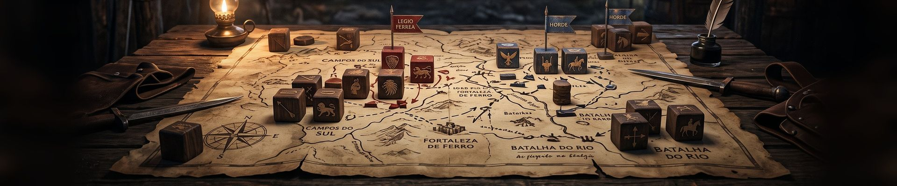
A batalha, como partida
Por que este ataque deu certo, ou não deu, do ponto de vista do tabuleiro. O terreno, as peças de cada lado, a ordem dos lances e o erro de planejamento. Não é canal de heroísmo: é canal de causa.
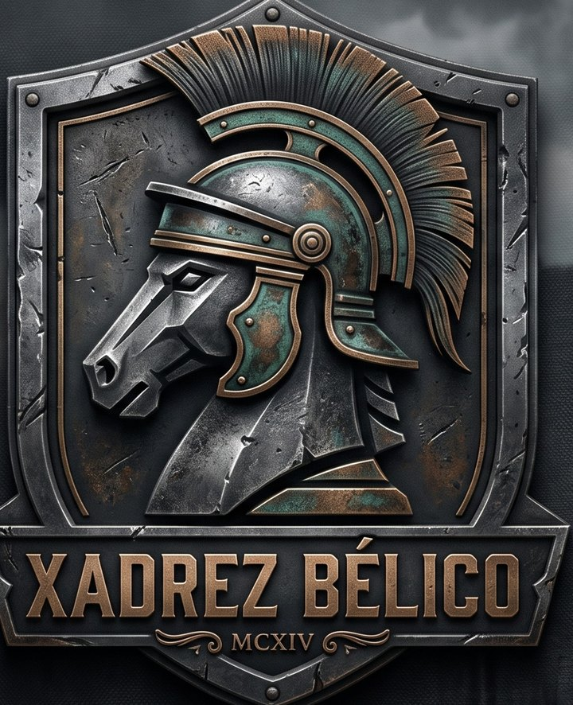
As batalhas
Cada página tem a ficha da batalha, a partida lance a lance, o veredito, os mitos contra o registro e as fontes.
-
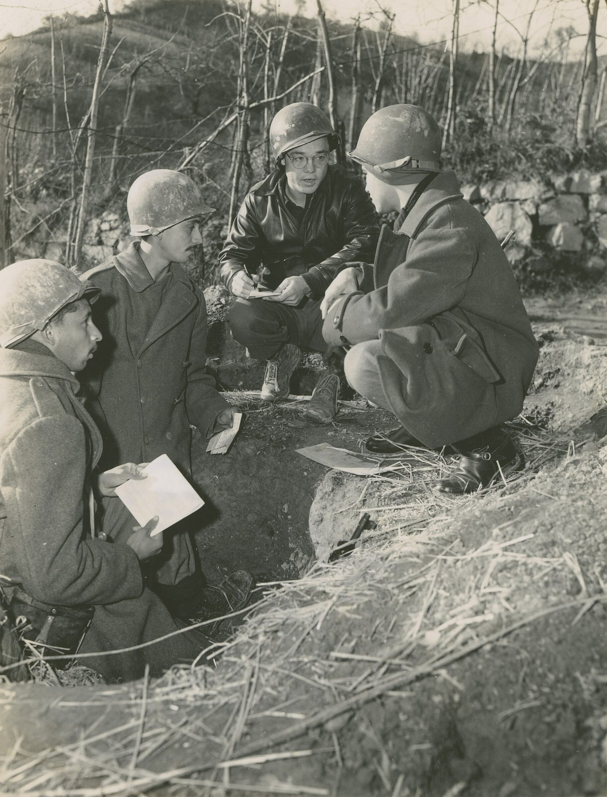
01A FEB na ItáliaMonte Castello
24 de novembro de 1944 a 21 de fevereiro de 1945 · Monte Castello, Apeninos, Emília-Romanha, ItáliaPor que os ataques de novembro e dezembro de 1944 falharam, e o de fevereiro de 1945 não?
Episódio 01Ler a partida → -
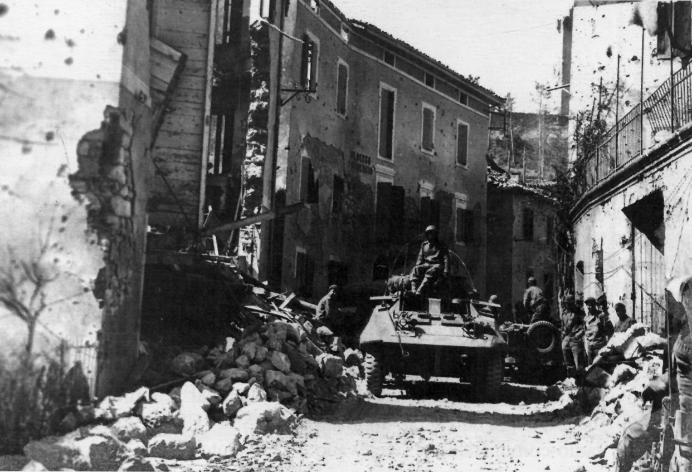
02 Estreia 01 out 2026A FEB na ItáliaMontese
14 a 17 de abril de 1945 · Montese, Módena, Emília-Romanha, ItáliaPor que Montese caiu em 2h15 e, ainda assim, custou 426 baixas brasileiras?
Episódio 02Ler a partida → -
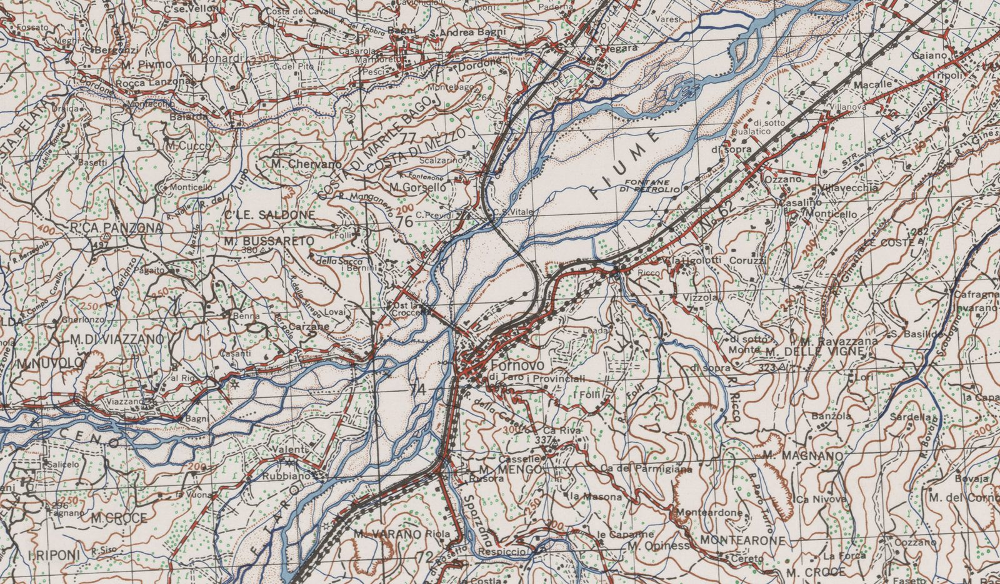
03 Estreia 08 out 2026A FEB na ItáliaFornovo di Taro
26 a 29 de abril de 1945 · Collecchio e Fornovo di Taro, Parma, Emília-Romanha, ItáliaComo uma divisão alemã inteira, com o comando junto, se rendeu à FEB no vale do Taro?
Episódio 03Ler a partida → -
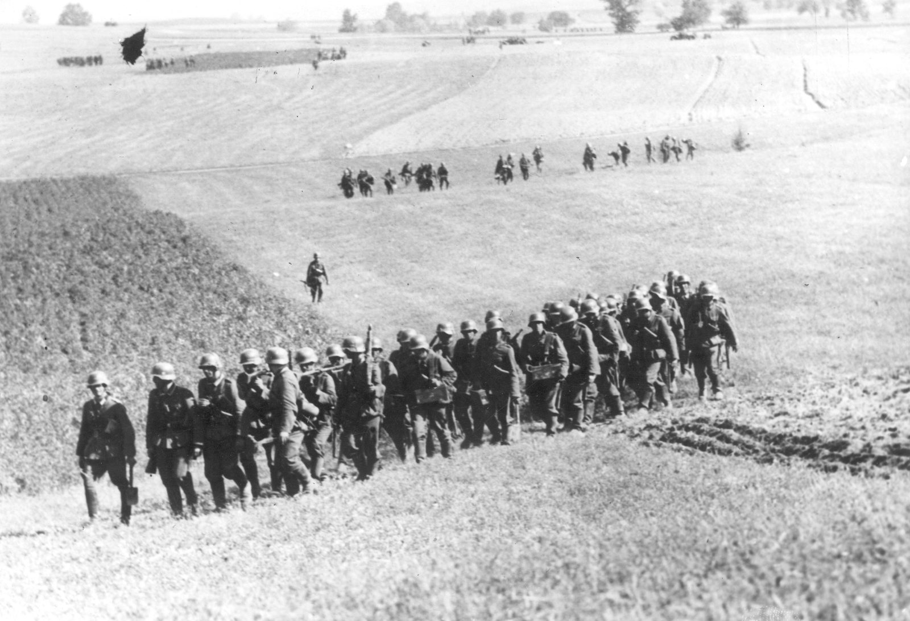
04 Estreia 15 out 2026Segunda Guerra Mundial, 1939A campanha da Polônia
1º de setembro a 6 de outubro de 1939 · Polônia, nas fronteiras de 1939A forma de jogar que o mundo chamou de Blitzkrieg já existia em setembro de 1939, ou foi escrita depois, olhando para o resultado?
Episódio 04Ler a partida → -
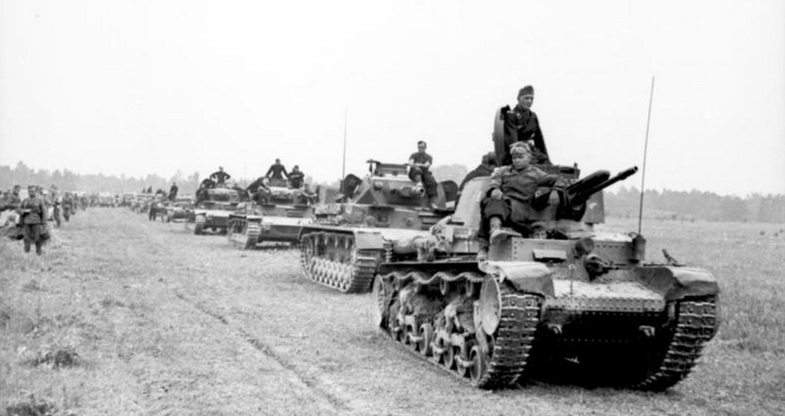
05 Estreia 22 out 2026Segunda Guerra Mundial, 1940A queda da França
10 de maio a 25 de junho de 1940 · França, Bélgica, Países Baixos e Luxemburgo; o ponto de decisão em Sedan, no rio Meuse, departamento das Ardenas, FrançaSe em setembro de 1939 não havia doutrina nova, o que exatamente a Alemanha aplicou na França em maio de 1940?
Episódio 05Ler a partida → -
 06
Estreia 29 out 2026
Segunda Guerra Mundial, 1940
06
Estreia 29 out 2026
Segunda Guerra Mundial, 1940Dunquerque
24 de maio a 4 de junho de 1940 · Dunquerque, departamento do Norte, França, e as praias até La Panne, Bélgica; o bolsão de Flandres entre Lille e o Canal da ManchaPor que a máquina alemã parou diante de Dunquerque quando só faltava fechar a mão?
Episódio 06Ler a partida → -
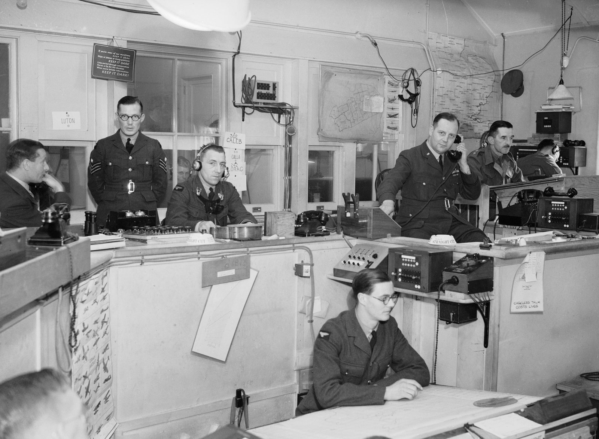
07 Estreia 05 nov 2026Segunda Guerra Mundial, 1940A Batalha da Inglaterra
10 de julho a 31 de outubro de 1940 · Sul e sudeste da Inglaterra, Reino Unido, Londres e o Canal da Mancha, contra bases aéreas alemãs no norte da França, na Bélgica, nos Países Baixos e na NoruegaA força aérea que não fechou Dunquerque podia abrir a Inglaterra?
Episódio 07Ler a partida → -
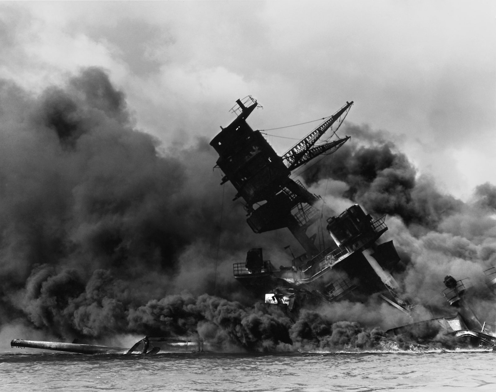
08 Estreia 12 nov 2026Segunda Guerra Mundial, 1941Pearl Harbor
7 de dezembro de 1941 · Pearl Harbor, ilha de Oahu, Havaí (então território dos Estados Unidos), Pacífico centralUm ataque perfeito no tático e errado no estratégico?
Episódio 08Ler a partida → -
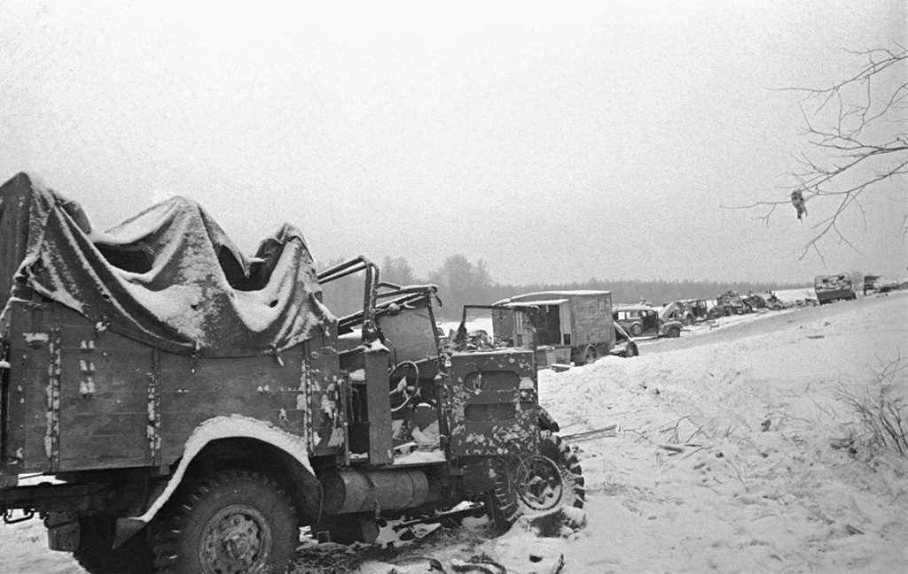
09 Estreia 19 nov 2026Segunda Guerra Mundial, 1941A Batalha de Moscou
30 de setembro de 1941 a 7 de janeiro de 1942 · Os acessos a Moscou, Rússia, de Viazma e Briansk, a oeste, a Kalinin (hoje Tver), ao norte, e Tula, ao sulPor que a Blitzkrieg parou às portas da capital?
Episódio 09Ler a partida → -
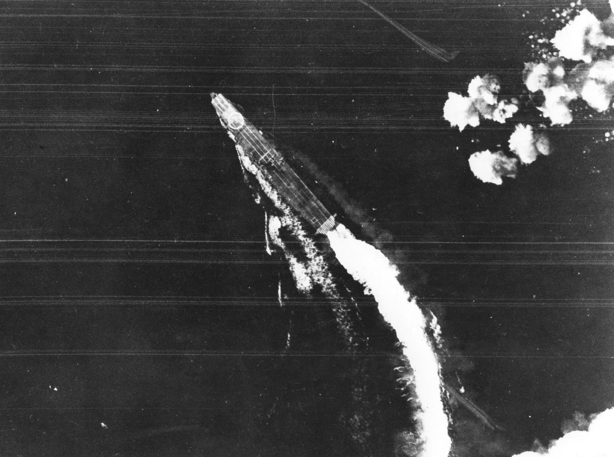
10 Estreia 26 nov 2026Segunda Guerra Mundial, 1942A Batalha de Midway
4 a 7 de junho de 1942 · Atol de Midway, extremo noroeste do arquipélago do Havaí (Estados Unidos), e o Pacífico Norte a noroeste e a nordeste deleComo cinco minutos viraram a guerra no Pacífico?
Episódio 10Ler a partida → -
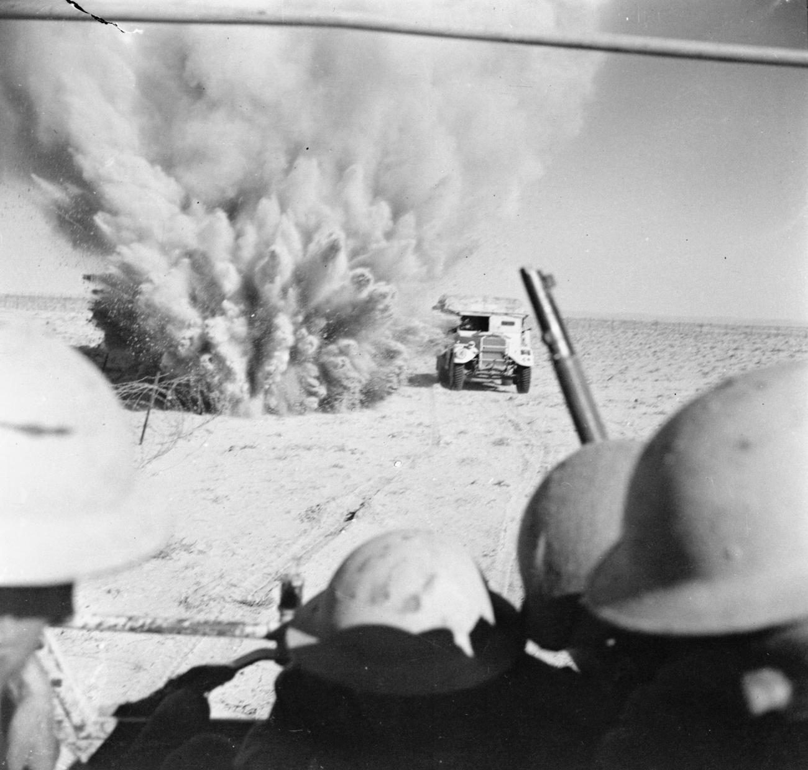
11 Estreia 03 dez 2026Segunda Guerra Mundial, 1942El Alamein
23 de outubro a 11 de novembro de 1942 · El Alamein, costa mediterrânea do Egito, a cerca de 106 km de AlexandriaO deserto como tabuleiro: logística contra genialidade — por que o Raposa do Deserto perdeu?
Episódio 11Ler a partida → -
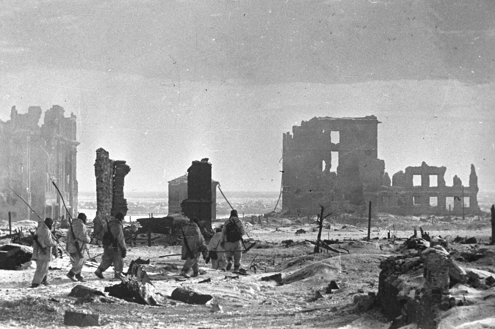
12 Estreia 10 dez 2026Segunda Guerra Mundial, 1942–1943Stalingrado
17 de julho de 1942 a 2 de fevereiro de 1943 · Stalingrado (hoje Volgogrado), oblast de Volgogrado, Rússia, e a curva do Don entre o rio e o VolgaComo o exército que cercava Stalingrado acabou cercado dentro dela — e por que não saiu?
Episódio 12Ler a partida → -
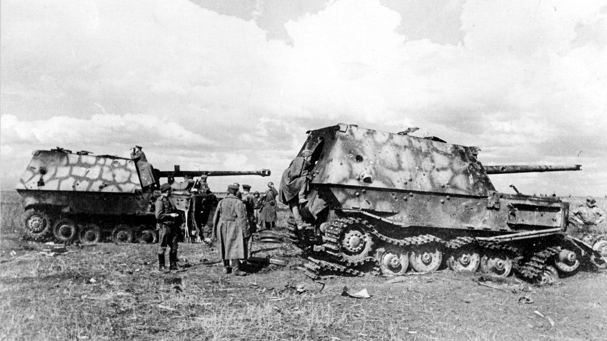
13 Estreia 17 dez 2026Segunda Guerra Mundial, 1943Kursk
5 de julho a 23 de agosto de 1943 · Saliente de Kursk, entre Orel e Belgorod, oblasts de Kursk, Orel e Belgorod, Rússia, até Kharkov, UcrâniaA maior batalha de tanques da Segunda Guerra foi vencida antes de começar?
Episódio 13Ler a partida → -
 14
Estreia 24 dez 2026
Segunda Guerra Mundial, 1944
14
Estreia 24 dez 2026
Segunda Guerra Mundial, 1944Monte Cassino
17 de janeiro a 18 de maio de 1944 · Cassino, Lácio, Itália: o Monte Cassino e a abadia beneditina, os vales do Rapido, do Liri e do Garigliano, e os Montes Auruncos ao sulPor que foram precisos quatro assaltos contra a mesma montanha — e o que mudou no último?
Episódio 14Ler a partida → -
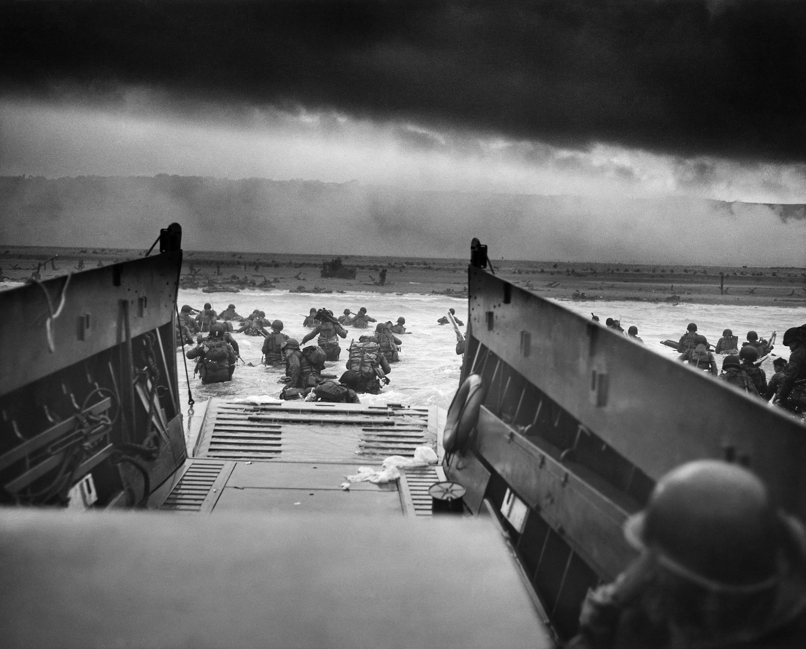
15 Estreia 31 dez 2026Segunda Guerra Mundial, 1944Dia D
6 de junho de 1944 · Costa da Baixa Normandia, entre a península do Cotentin e o rio Orne, FrançaPor que o lance saiu na Normandia, e não em Calais?
Episódio 15Ler a partida → -
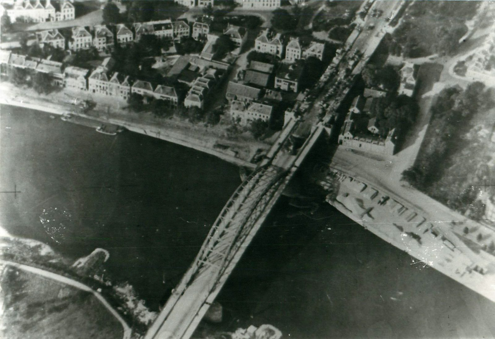
16 Estreia 07 jan 2027Segunda Guerra Mundial, 1944Operação Market Garden
17 a 25 de setembro de 1944 · Corredor de Eindhoven a Arnhem, nas províncias de Brabante do Norte e Guéldria, Países Baixos, passando por Son, Veghel, Grave e NijmegenPor que "uma ponte longe demais"? Um plano que dependia de uma única estrada e de todas as pontes caírem intactas e na hora.
Episódio 16Ler a partida → -
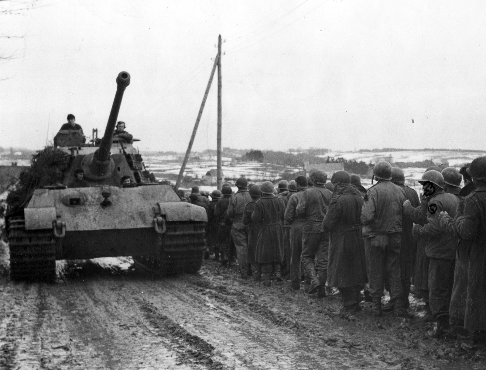
17 Estreia 14 jan 2027Segunda Guerra Mundial, 1944–1945Ardenas
16 de dezembro de 1944 a 25 de janeiro de 1945 · Ardenas, Bélgica e Luxemburgo — de Monschau e da crista de Elsenborn, no norte, a Echternach, no sul, e até Celles, perto de Dinant, junto ao rio MosaPor que o mesmo lance de 1940, pela mesma floresta, não funcionou em 1944?
Episódio 17Ler a partida → -
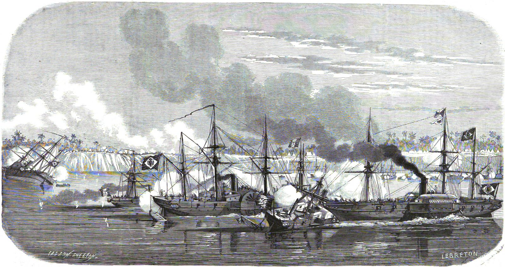
18 Estreia 21 jan 2027Guerra do Paraguai, 1865Riachuelo
11 de junho de 1865 · Rio Paraná diante da foz do arroio Riachuelo, cerca de 15 km abaixo da cidade de Corrientes, província de Corrientes, ArgentinaComo um rio estreito virou tabuleiro: por que o ataque de surpresa paraguaio falhou, como Barroso virou a batalha com um aríete, e o que a vitória realmente fechou?
Episódio 18Ler a partida → -
 19
Estreia 28 jan 2027
Guerra do Paraguai, 1866
19
Estreia 28 jan 2027
Guerra do Paraguai, 1866Tuiuti
24 de maio de 1866 · Tuiuti (Tuyutí), entre o Estero Bellaco e o Estero Rojas, departamento de Ñeembucú, Paraguai, na estrada de Passo da Pátria a HumaitáPor que o ataque paraguaio de surpresa contra o acampamento aliado entre os pântanos de Tuiuti virou a maior batalha campal da América do Sul — e por que a surpresa não bastou?
Episódio 19Ler a partida → -
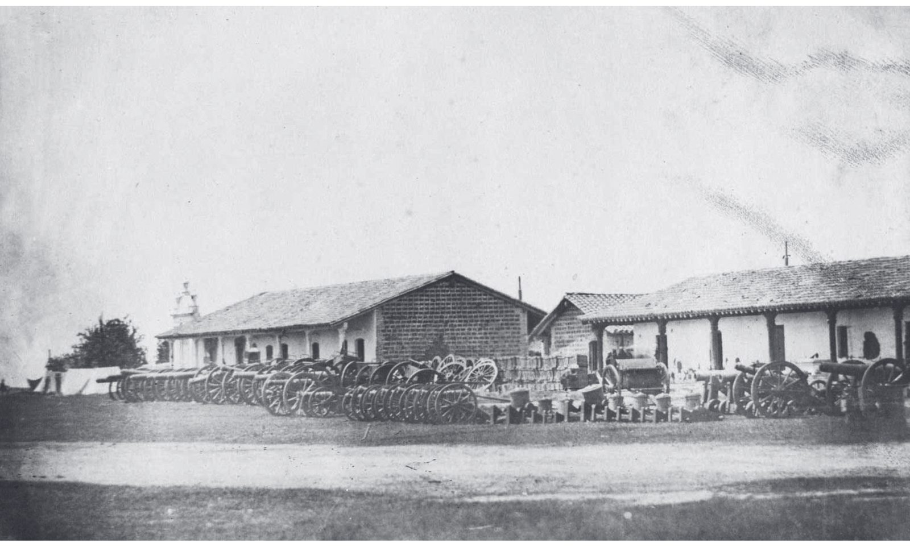
20 Estreia 04 fev 2027Guerra do ParaguaiHumaitá
22 de setembro de 1866 a 5 de agosto de 1868 · Humaitá, departamento de Ñeembucú, Paraguai, numa curva do rio Paraguai; e o Chaco, na margem opostaPor que uma fortaleza de curva de rio, comparada a Sebastopol, travou a guerra por quase dois anos, e o que finalmente a destravou?
Episódio 20Ler a partida →
O que estava à vista, lido de novo
Público de história militar corrige data, unidade e calibre — e com razão. Cada número aqui leva um selo dizendo quanto se pode confiar nele.
Quando as fontes divergem, mostramos as versões e não escolhemos. Nome de unidade e horário só entram depois de conferidos. E nenhuma imagem deste site foi gerada por IA: é material de época, carta militar ou foto do lugar, com o ano na tela.
- 2+ fontes
ConfirmadoConfirmado em duas ou mais fontes independentes.
- 1 fonte
Fonte únicaUma fonte só; o texto diz qual.
- diverge
DivergênciaAs fontes discordam; mostramos as versões e não escolhemos.
- sem registro
Sem registroNinguém registrou. Dizemos isso em vez de inventar.